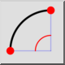
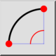

Menu : Dessin > Arc > 2 points et l'angle
Raccourci : A, 2
Commandes : arc2 | a2
Barre d'outil / icône :
 

Menu : Dessin > Arc > 2 points et l'angle
Raccourci : A, 2
Commandes : arc2 | a2
Description :
Dessine un arc en utilisant le point de départ, le point final et l'angle inclus.
Procédure :